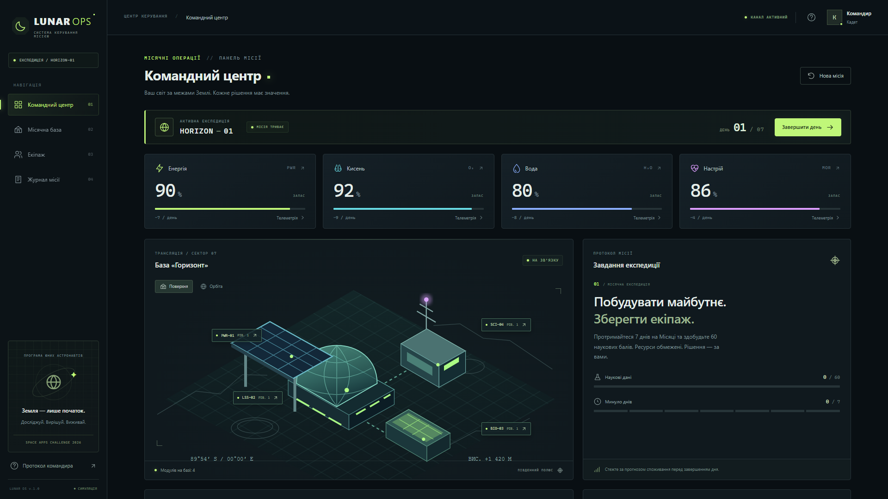
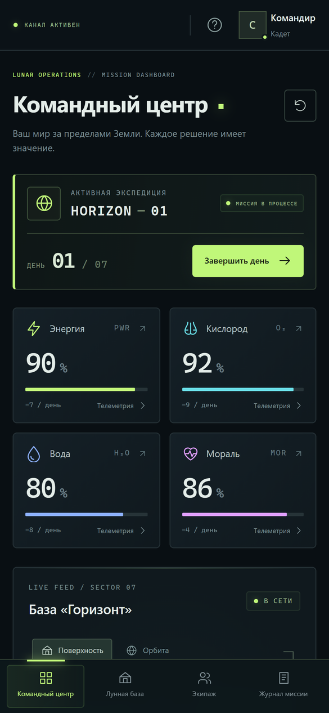

NASA SPACE APPS CHALLENGE · DNIPRO 2026
Lunar Ops — a browser-based lunar survival and science simulator
CHALLENGE: BUILD A JUNIOR ASTRONAUT MISSION TRAINER
01 // MISSION BRIEFING
THE PROBLEM
Space education often shows facts, not the decisions behind them. Lunar Ops turns limited supplies, crew safety and scientific goals into a mission students can manage.
OUR MISSION
Lunar Ops is a browser-based Moon mission simulator. Keep your crew safe for 7 days and collect 60 science points while balancing resources and tough decisions.
7
days to complete the mission
4
resources: energy, oxygen, water, morale
2
operations available each day
NASA SPACE APPS · DNIPRO 2026
02 / 07
02 // HOW IT WORKS
1
Review telemetry, crew health, resources and the forecast.
2
Up to two operations: research, oxygen, water, rest or an upgrade.
3
A solar storm, an air leak or a possible ice discovery.
4
See resource changes, science progress and the mission log.
Gain science today → manage fewer resources tomorrow
NASA SPACE APPS · DNIPRO 2026
03 / 07
03 // PLAYER EXPERIENCE


No account or installation. A web client talks to the mission API.
Track four resources, crew health, station modules and science.
Two difficulty levels, event choices and JSON mission logs.
NASA SPACE APPS · DNIPRO 2026
04 / 07
04 // NASA SCIENCE
| Current scenario | Scientific context | Status in the game |
|---|---|---|
| Solar storm | Charged particles and lunar radiation risk | Playable event: shield or shelter |
| Air leak | Habitat pressure and oxygen safety | Playable event: repair or isolate |
| Possible lunar ice | Water ice in permanently shadowed regions | Playable event: explore or scan |
| Station systems | Solar power and life-support trade-offs | Upgradable modules and daily forecast |
| Science progress | Research, mission goals and crew decisions | 7 days; target: 60 science points |
Current events and resource values are educational simulations, not live NASA feeds.
References: NASA DONKI (space weather) · NASA OSDR & RadLab (crew health, radiation) · NASA Moon Trek (lunar poles) · CSA (food in space)
NASA SPACE APPS · DNIPRO 2026
05 / 07
05 // CREW
Students of the Applied Rocket-and-Space Engineering College, Dnipro · web development, UI/UX, game mechanics, NASA open data
Olexii Tkachov
Team lead, software engineer
Vladislav Shatohin
Software engineer
Yelizaveta Lebidieva
Graphic designer
Kirilo Sidoruk
Presentation designer
Tetiana Mandryka
Presentation designer assistant
NASA SPACE APPS · DNIPRO 2026
06 / 07
06 // NEXT MISSION
TEST
Run classroom playtests with students and teachers; gather feedback on clarity and difficulty.
UPGRADE
Expand mission scenarios and add sourced NASA datasets (DONKI first) with in-game credits.
IMPLEMENT
An English interface, a teacher-friendly classroom mode and better mobile accessibility.
Astra Systems · Project: github.com/aleexxeyy/lunar-ops · Current events use simulated data
github.com/aleexxeyy/lunar-ops
07 / 07